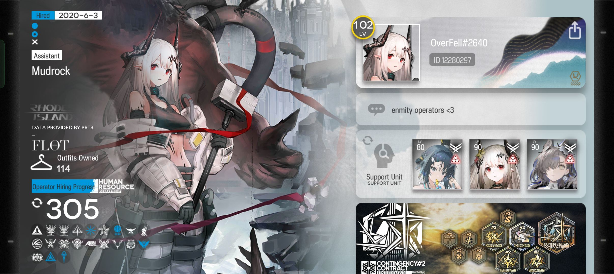
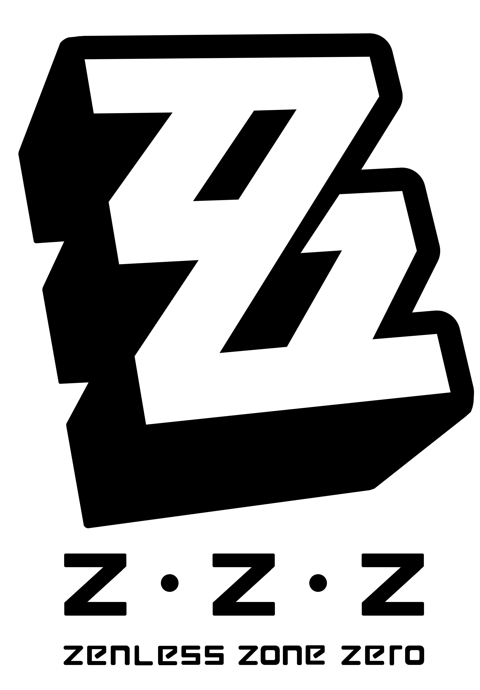

Arknights
Arknights is one of my favourite games due to the story and atmosphere.
This game is so peak. I've sunk countless hours into this one. Unfortunately, I am usually not smart enough to clear difficult content without looking for a guide...

^^Screenshot of my account.
Blue Archive
Blue archive would probably rank fourth or fifth on my list of "favourite games" for the story alone. The art of the game is also gorgeous.
Honkai: Star Rail

Often abbreviated to H:SR, this game's story hooked me in when it first came out and it's still going! In fact, we are like barely in the second year of HSR (i think(could very much be wrong))
Zenless Zone Zero

Probably the youngest of my favourite games, made by the same guys behind H:SR (Hoyoverse). The animations and combat in this game are top notch. Did you know that due to all of the detail packed into this game, it's actually got a larger file size than H:SR, despite being released like a year later? Even with all the constant updates that H:SR gets, ZZZ still manages to be comparable in terms of file size.